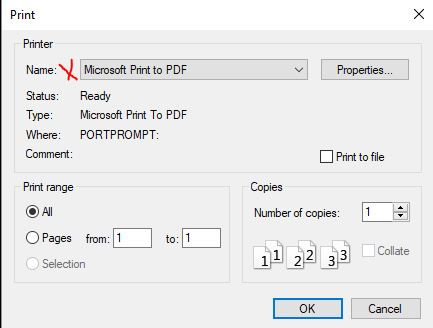

These exercises introduce the concept of developing an organization's culture. After completing this assignment you will be able to: Identify the major components that define an organization and its culture Identify how employees are grouped Identify the impact of the reporting structures Identify and distinguish functional versus product organizations
The goal of this assignment is to familiarize you with the factors that influence an organization and its culture. You are expected to devlop a working knowledge of the following from this and earlier chapters. If you are having trouble there are several resources available, besides a Google Search You can also ask a teaching assistant or ask the instructor for assistance. Information Technology Organizational Structures Centralized Decentralized Organizational Transformation Mintzberg's five areas Considerations of product and function Toyota Kata
Review this video depicting a workshop that teaches scrum using Lego bricks. Then read this description of the workshop activity. Then answer the following questions.
Focus on the first sprint. (50) 1. Briefly state what factor the team learned was very important to the group's success. (50) 2. How many users stories were completed after the first sprint? (50) 3. Briefly explain what the particpants learned was step was necessary to ensure success.
Review the Chapter 9 discussion in the section 'IT versus Product organization'. Discuss the two competing organizational model choices available, the pros and cons of each, and decide if Lena's people made the correct choice. (50) 4. State whether you agree or disagree with the choice to adopt the Spotify model, in which IT infrastructure personnel are 'embedded' in the product teams, and briefly state a reason for this choice.
Review the Chapter 9 reference to Henry Mintzberg regarding 'Structures in Five'. Discuss Mintzberg's ideas with your group and classmates. Hint: wikipedia Aside: if you want to find out more regarding evolutionary organizational theory refer to Reinventing Organizations. (50) 5. According to Mintzberg what are the six basic parts of an organization?
Review the Chapter 9 material in the 'Product and Function' section. Discuss these ideas and concepts with your group and classmates. Consider the origin and purpose of different organizational structures. Then reflect on the various structures-pure function to pure product, various combinations of each, to two-tiered models employing skunkworks. All of these have pros and cons. (50) 6. Based on your discussions and experience, provide a short statement of which model you would favor for an organization involved in digital product development.
Consider the IT Human Resource Management and Why Culture Matters sections of Chapter 9, and discuss the ideas with your group members and class mates. (50) 7. Based on what you now know about human behavior, from reading the book, and from reading The Phoenix Project, briefly explain why organizational culture and motivated individuals are so important to the success of a digital product company, as contrasted with a 1960s era automobile manufacturing plant. (50) 8. Do some research on the Toyota kata. Briefly explain why repeating a process is so important to managerial success.
For this Exercise, please read all of these instructions. Make sure that you have completed all the previous exercises by filling in your answers, and publishing them to your website. Then browse to your http://classes.winona.edu website, make sure all the Exercises are complete, then print it as .pdf file. (100) 9. Assignment .pdf file creation.
To proceed you must have Windows 10 which includes 'Print to PDF' installed. You know it is installed when one of the print dialog box choices is "Microsoft Print to PDF"  Refer to this url and follow these steps. https://www.howtogeek.com/248462/how-to-combine-images-into-one-pdf-file-in-windows/ You will be creating one .pdf (portable document format) file from the six screen shots that you have taken. Open File Explorer, make sure the screen shot files are properly named(Ex1.. , Ex2.. , Ex3.. ) and sorted in Ascending order. Select the two screen shots to be combined. Right Click and select 'Print' from the pop-up menu. See the howtogeek article for more options. Click on 'Print' and save the file with a name such as "xxx...ScreenShots.pdf" in an appropriate location where you can easily find it again, such as OneDrive-MNSCU/... Remember to use PDFill when you need to Merge the screen shot .pdf file with any other .pdf file(s) (100) 10. Upload your file 'AssignmentSummative09.pdf' to the D2L 'Summative09' Assignment Folder